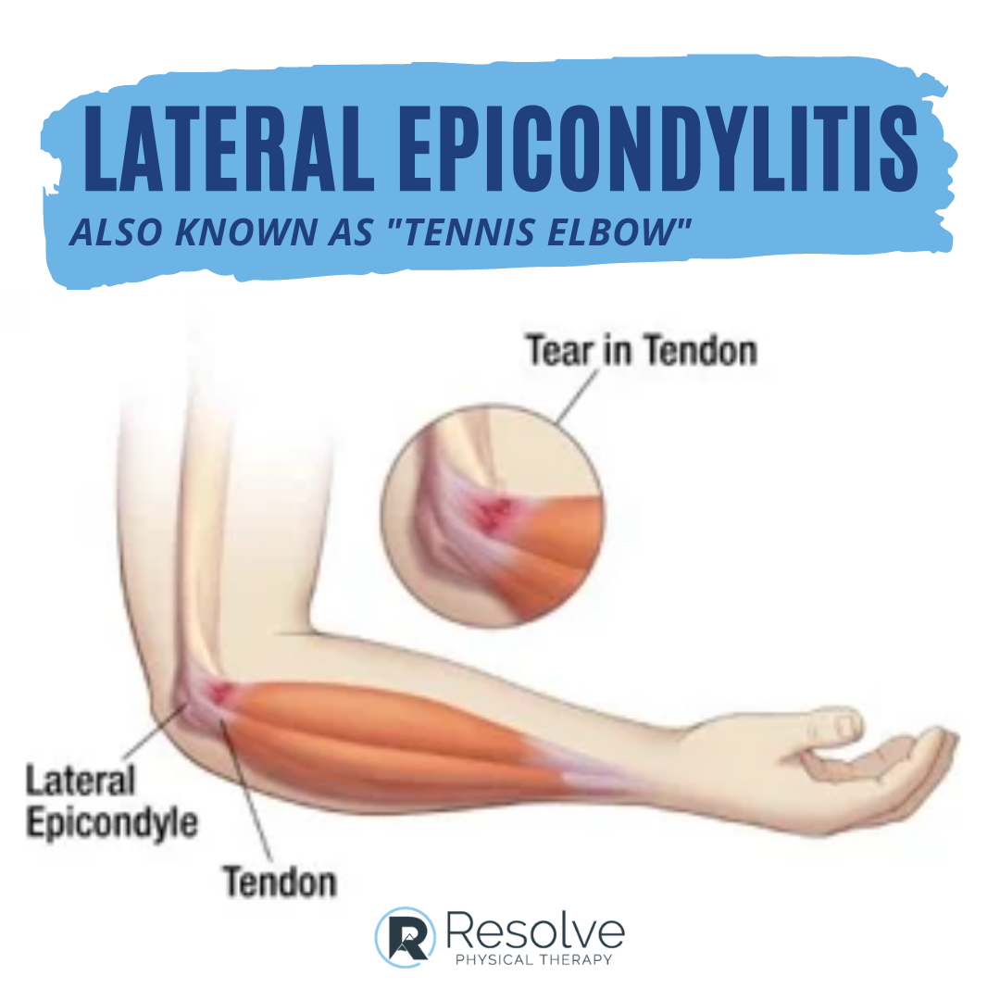
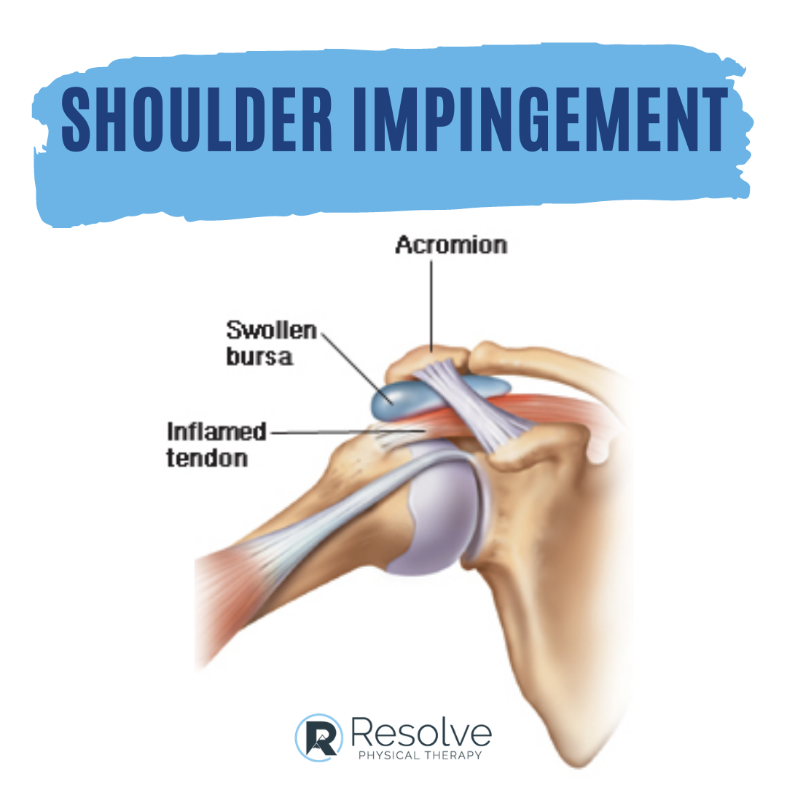
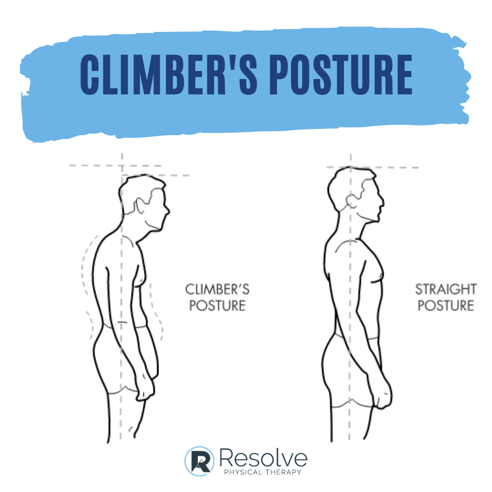
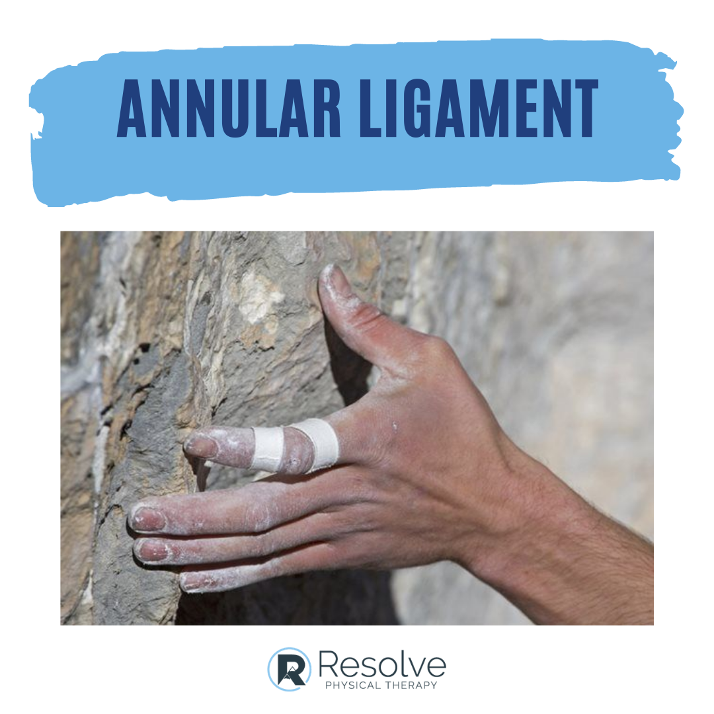

Central Oregon is one of the best climbing destinations in the Pacific Northwest. From the tuff columns at Smith Rock to the basalt crags scattered across the high desert, Bend-area climbers have access to world-class routes. But all that vertical movement puts significant stress on the fingers, shoulders, elbows, and spine. Understanding the most common climbing injuries—and knowing how to prevent them—can help you spend more time on the wall and less time on the sidelines.
At Resolve Physical Therapy, we treat climbers of every ability level, from weekend boulderers to competitive sport climbers. Below are four of the most common climbing injuries we see in our Bend, Oregon clinic, along with practical prevention strategies you can start using today.
1. Lateral Epicondylitis (Climber's Elbow)

Lateral epicondylitis, commonly called "tennis elbow" or "climber's elbow," is an overuse injury of the tendons that attach to the bony prominence on the outside of the elbow. Despite its association with tennis, this condition is extremely common among climbers because of the repetitive gripping and wrist extension required on nearly every route.
The pain typically starts as a dull ache on the outer elbow that worsens during climbing, particularly on crimpy holds or routes that require sustained gripping. Over time, the discomfort can become sharp and begin to affect daily tasks like turning doorknobs, carrying grocery bags, or shaking hands.
Prevention Strategies
- Warm up your forearms before climbing with gentle wrist circles, finger extensions against a rubber band, and progressive hangs on large holds.
- Balance your training by strengthening the wrist extensors with reverse wrist curls. Climbers tend to develop powerful flexors but neglect the opposing muscle group.
- Manage training volume by following the 10% rule: increase climbing difficulty or duration by no more than 10% per week.
- Use eccentric exercises such as the Tyler Twist with a FlexBar to build tendon resilience.
2. Shoulder Impingement

Shoulder impingement occurs when the rotator cuff tendons or the subacromial bursa become compressed between the head of the humerus and the acromion process during overhead movements. In climbing, this happens frequently because so many movements involve reaching above your head, pulling laterally, or catching dynamic moves with an outstretched arm.
Early signs include a pinching or catching sensation when reaching overhead, pain in the front or side of the shoulder during or after climbing, and difficulty sleeping on the affected side. Left untreated, impingement can progress to partial or full rotator cuff tears, which significantly extends recovery time.
Prevention Strategies
- Strengthen your rotator cuff with external rotation exercises using a resistance band. Aim for two to three sets of 15 repetitions, three times per week.
- Improve scapular stability with exercises like wall slides, prone Ys and Ts, and serratus anterior punches. A stable shoulder blade provides a solid platform for the rotator cuff to work from.
- Maintain thoracic mobility with foam roller extensions and open-book rotations. A stiff mid-back forces the shoulder to compensate during overhead reaches.
- Practice good climbing technique by keeping your elbows close and avoiding full lockout in overhead positions. Use your legs to drive upward rather than muscling through with your shoulders.
3. Forward Head and Rounded Shoulder Posture

This is less of an acute injury and more of a chronic postural adaptation, but it is one of the most widespread issues among regular climbers. Climbing heavily develops the anterior chain muscles—the pectorals, anterior deltoids, and biceps—while the posterior chain muscles often lag behind. Over months and years, this imbalance pulls the shoulders forward and pushes the head into a forward position relative to the spine.
The consequences extend beyond appearance. Forward head posture increases the load on the cervical spine by as much as 60 additional pounds for every inch the head moves forward. This can lead to neck pain, tension headaches, reduced shoulder range of motion, and even numbness or tingling in the arms from compressed nerves in the thoracic outlet.
Prevention Strategies
- Stretch your pectorals with doorway stretches held for 30 seconds on each side. Focus on three different arm positions (low, middle, and high) to target all portions of the pec major.
- Strengthen your mid and lower trapezius with prone rowing exercises and band pull-aparts. These muscles are the direct antagonists to the forward-pulling climbing muscles.
- Add chin tucks to your daily routine. Perform 10 to 15 reps several times a day to retrain the deep neck flexors that support proper cervical alignment.
- Include pulling exercises in different planes. Rows, face pulls, and reverse flyes help counterbalance the vertical pulling pattern of climbing.
For more detailed guidance on correcting postural imbalances, see our posture assessment guide.
4. Annular Ligament (Pulley) Injuries

The annular ligaments, often called pulleys, are small bands of tissue that hold the flexor tendons close to the finger bones. There are five annular pulleys (A1 through A5) in each finger, and the A2 and A4 pulleys are the ones most commonly injured in climbing. These injuries range from mild strains to complete ruptures and are one of the most feared injuries in the climbing community because recovery is slow and returning too soon almost always results in re-injury.
A pulley injury typically occurs during a dynamic or crimping move when excessive force is channeled through a single finger. Climbers report hearing or feeling a pop, followed by swelling, tenderness along the underside of the finger, and difficulty maintaining a crimp grip. In a partial tear, pain may be present but tolerable. A complete rupture causes the tendon to bowstring away from the bone, which is visible as a raised bump when the finger is flexed against resistance.
Prevention Strategies
- Warm up thoroughly before attempting maximum efforts. Start with easy routes for at least 15 to 20 minutes before progressing to harder grades.
- Favor open-hand grip positions over closed crimps whenever possible. The open-hand position distributes load more evenly across the pulleys.
- Tape your fingers using the H-tape method for additional support during high-intensity sessions, especially if you have a history of pulley injuries.
- Gradually build finger strength with hangboard training, progressing from large edges to smaller ones over weeks and months rather than days.
- Listen to your body. If you feel a sudden twinge or pop in a finger, stop climbing immediately. Early intervention dramatically improves outcomes.
When to See a Physical Therapist
Many climbing injuries respond well to self-care in the early stages—rest, ice, and modifying your climbing to avoid painful movements. However, you should see a physical therapist if any of the following apply:
- Pain persists for more than two weeks despite rest and home treatment.
- You experience swelling, bruising, or visible deformity in a finger or joint.
- Pain wakes you up at night or is present at rest.
- You have numbness, tingling, or weakness in your arm or hand.
- The same injury keeps coming back despite your prevention efforts.
At Resolve Physical Therapy, we provide one-on-one evaluations for climbers in our Bend, Oregon clinic. We assess not only the injured area but also your movement patterns, training load, and technique to identify the root cause of the problem. Our goal is to get you back on the wall safely and help you climb stronger than before.
If you are dealing with a climbing injury or want to build a preventive training program, schedule an evaluation or call us at (541) 306-1099. Oregon is a direct-access state, so no physician referral is needed.
For more information on how we treat sports and overuse injuries, visit our Running & Sports Rehabilitation page or learn about our approach to chronic pain and manual therapy.